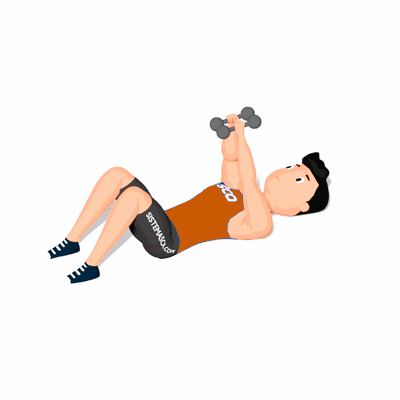

Elevação Pélvica com Pull Over

O exercício trabalha em conjunto o fortalecimento e hipertrofia dos músculos do peito e glúteo.
Ficha Técnica
Tipo: Musculação
Grupo Muscular: Corpo
Aparelho: Nenhum
Músculos: Nenhum
Como realizar
- Pegue um halter em cada mão e deite sobre um colchonete;
- De barriga para cima com os braços estendidos a frente do corpo, posicione os joelhos flexionados e pés fixos ao solo;
- Empurre o quadril para cima, estendendo o máximo que conseguir, contraindo a musculatura dos glúteos na execução;
- Mantenha a posição e sem movimentar os cotovelos, desça os halteres até atingir a linha de trás da cabeça, fazendo um movimento de arco com os braços;
- Retorne os braços para a posição inicial realizando a contração dos músculos do peitoral;
- Em seguida, desça o quadril lentamente até ficar próximo do solo;
- Repita os movimentos, conforme o número de repetições orientado pelo professor(a).
 RC STORE
RC STORE